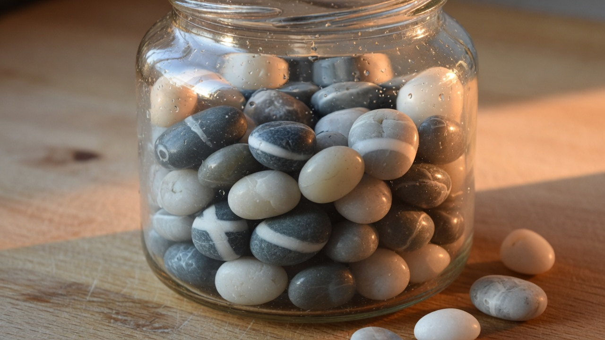
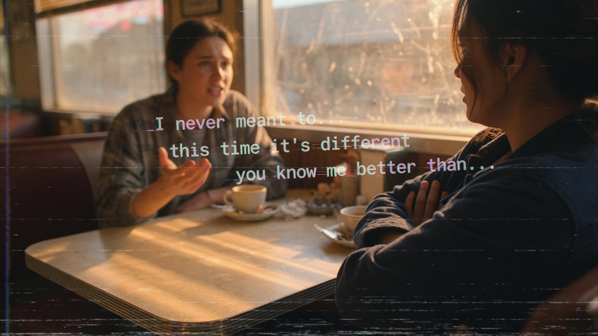
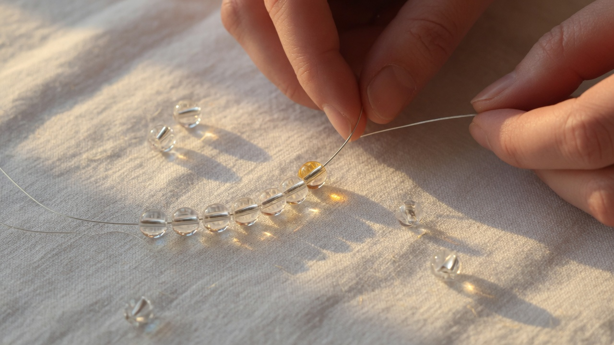
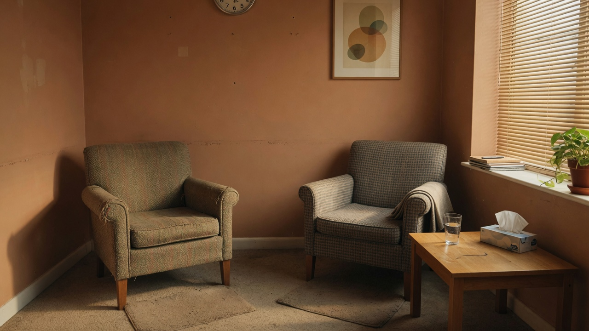

#01 One Hundred Deposits
#02 The Single Withdrawal
#03 The Channel DegradedHERO
#04 The Verified Hypothesis
#05 The Amygdala Fires

#06 The Liar's Dividend
#07 Replay Without Context
#08 The Five-to-One Ratio
#09 The Coffee Made Without Asking
#10 The Text About the Doctor's Appointment
#11 The Substrate Being Tested
#12 Voluntary Vulnerability

#13 The Channel Cleared One Signal at a Time
#14 The Therapist Remembers
#15 The Eye Roll That Costs Five
#16 Doubling Back Through the Betrayal
#17 The Negative Bias in the Wild
#18 The Slowness Is How It Works
#19 Post-Traumatic Growth

#20 Every Session You Show Up